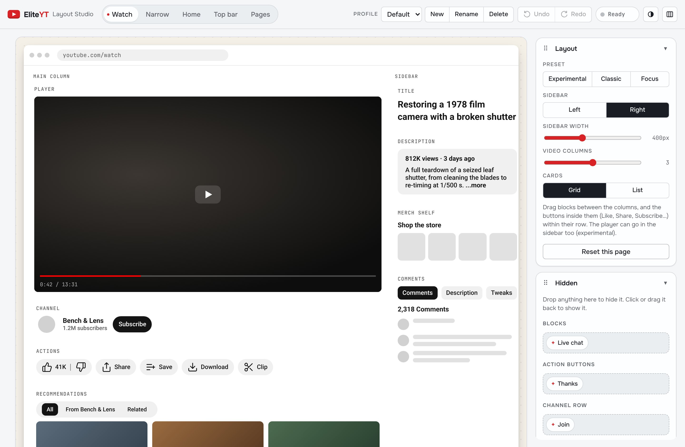
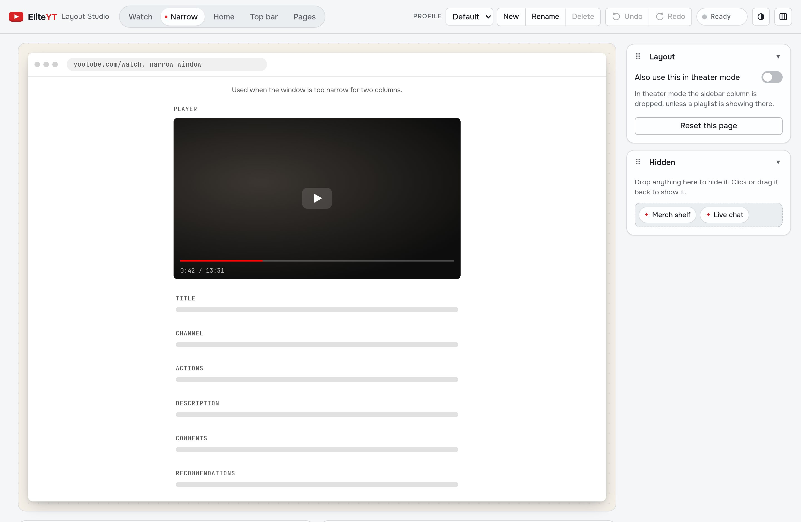
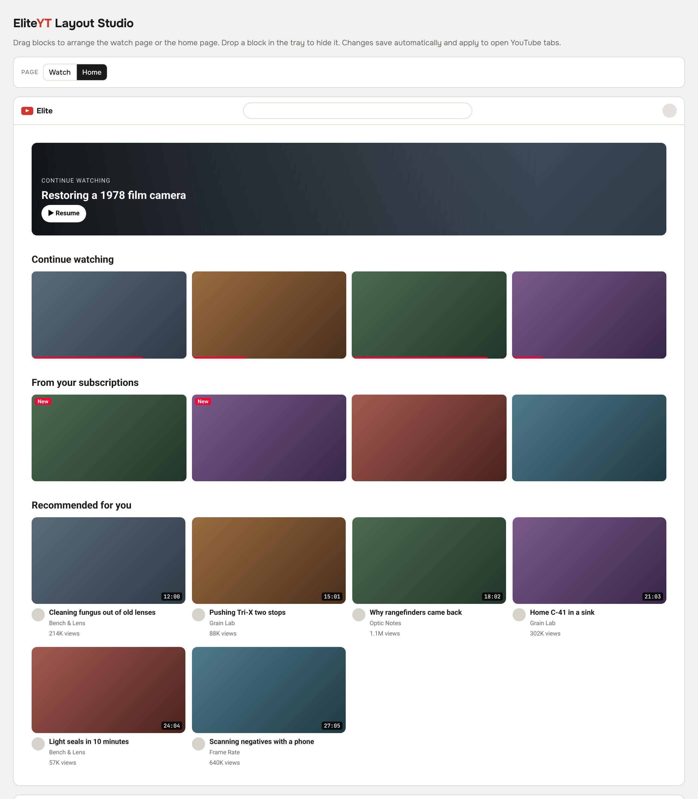
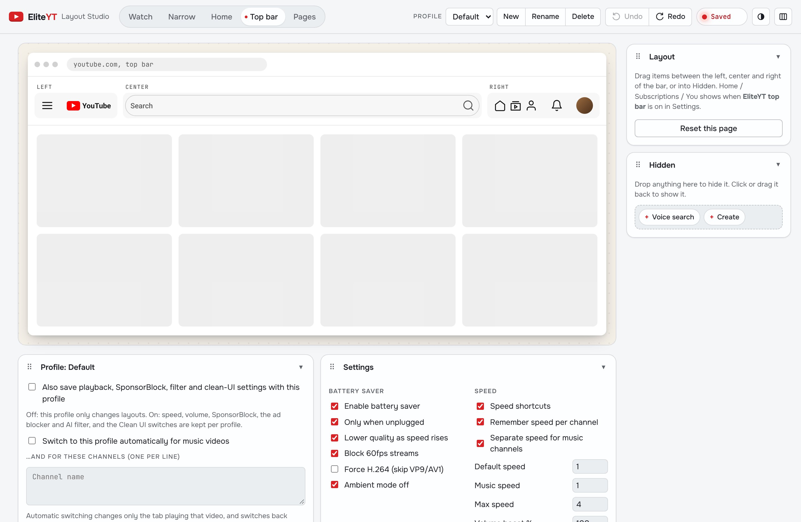
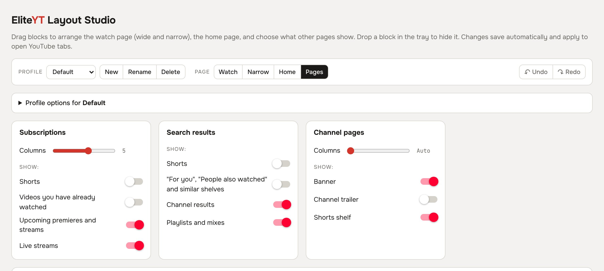
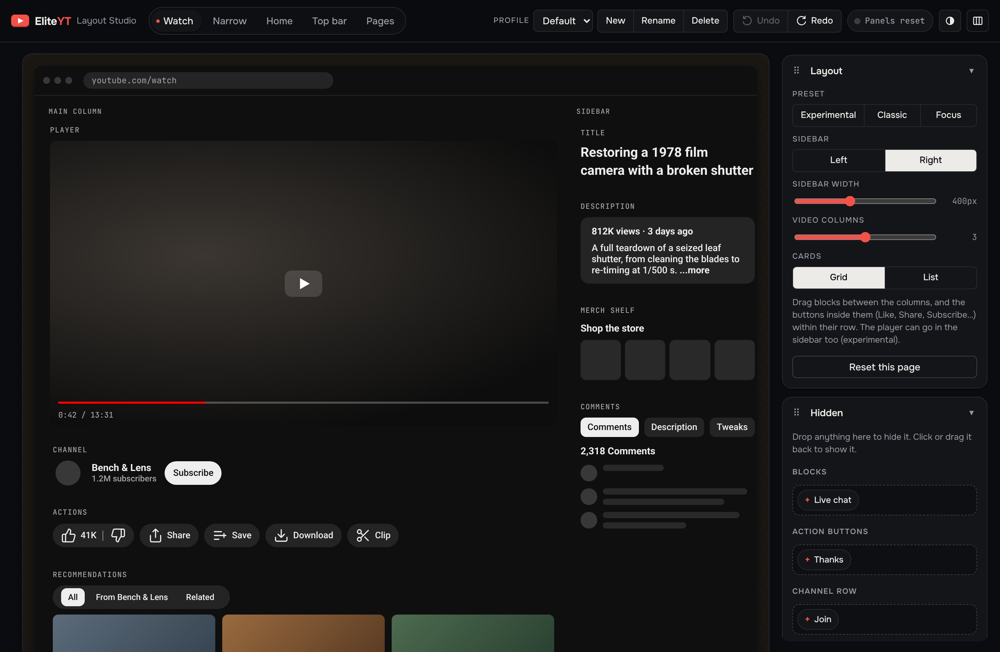
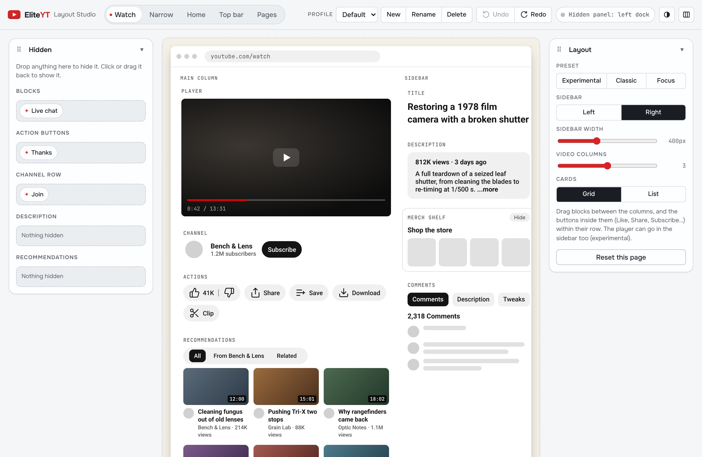

YouTube, without the noise.

 YOUTUBEELITEYT
YOUTUBEELITEYTDrag to compare
Drag anything anywhere.
Every block, button and menu item, on every page. Undo with Ctrl+Z.






A layout for every mood.
Keep several layouts side by side: one for learning, one for music, one for late-night scrolling.
- Switch on their own for music videos or chosen channels, in that tab only, and switch back when you leave.
- Carry their own settings: playback, SponsorBlock, filters and Clean UI, or share them across profiles.
- Export and import a profile as a JSON file to back it up or share it.
- Switch anywhere: in the studio, the toolbar button's right-click menu, the Tweaks tab, or Alt+Shift+P.

The video stays in view.
Stock YouTube puts the title, channel and seven buttons under the video and fills the sidebar with thumbnails, so reading comments means scrolling the video away.
Pause, and know what you're watching.
The title shows on the video with the controls. Pausing blurs the frame and shows the title, channel, views, date and description, like a streaming app.


A home that feels calm.
Streaming-app rows in YouTube's own design language. The left sidebar is gone; Home, Subscriptions and You sit next to your avatar, and the filter chips only appear once you scroll.


Ads, gone before they load.
EliteYT has its own ad blocker that works on YouTube only. It doesn't need filter lists, doesn't touch other sites, and works without a second extension.
Less slop in your feed.
Videos YouTube labels Made with AI, videos that call themselves AI-made, and low-effort formats like TTS reddit stories and hashtag spam get blurred with the reason. Reviews and news about AI are left alone.
Illustration with invented videos.
Know the music before you click.
For streamers and editors: hover a video and EliteYT shows whether YouTube lists Content ID-matched music in it, with the song and artist. Steer clear of claims before you play something on stream.
- Red badge when YouTube lists matched music; the tooltip names every song.
- Instant on hover: cards on screen are checked in the background as you scroll.
- Honest about limits: "none listed" isn't a guarantee, since non-music claims don't show there.
SponsorBlock, DeArrow, Return YouTube Dislike.
Three community projects, wired in directly. SponsorBlock and DeArrow are asked by a 4-character hash prefix of the video ID, so they never learn exactly what you watch; Return YouTube Dislike needs the full ID.

- SponsorBlock skips sponsors, self-promo and reminders by default; intros, outros and filler are opt-in. Seek back into a segment and it plays.
- DeArrow swaps in community titles and thumbnails. Hover a title to see the original.
- Return YouTube Dislike puts the count back inside the dislike button.
- Fast: requests run in parallel, only for cards near the screen, and are cached across reloads.
Fast, and easy on your battery.
Speeds are remembered per channel, music keeps its own, and a never-change list covers the rest. Keys: [ slower, ] faster, \ reset. Unplugged on Chrome, quality drops as speed rises.
speed ≥ 1.75× → 720p
below 1.75× → 1080p
60 fps → 30 fps
Ambient mode → off
Get EliteYT.
Free, open source under GPL-3.0, no account, no telemetry. Privacy policy.
Chrome, Helium & Chromium
- Clone or download the repo:
git clone https://github.com/Dronzer-Studios/eliteyt - Open
chrome://extensions, turn on Developer mode. - Load unpacked and pick the folder.
- Click the EliteYT button to open the Layout Studio.